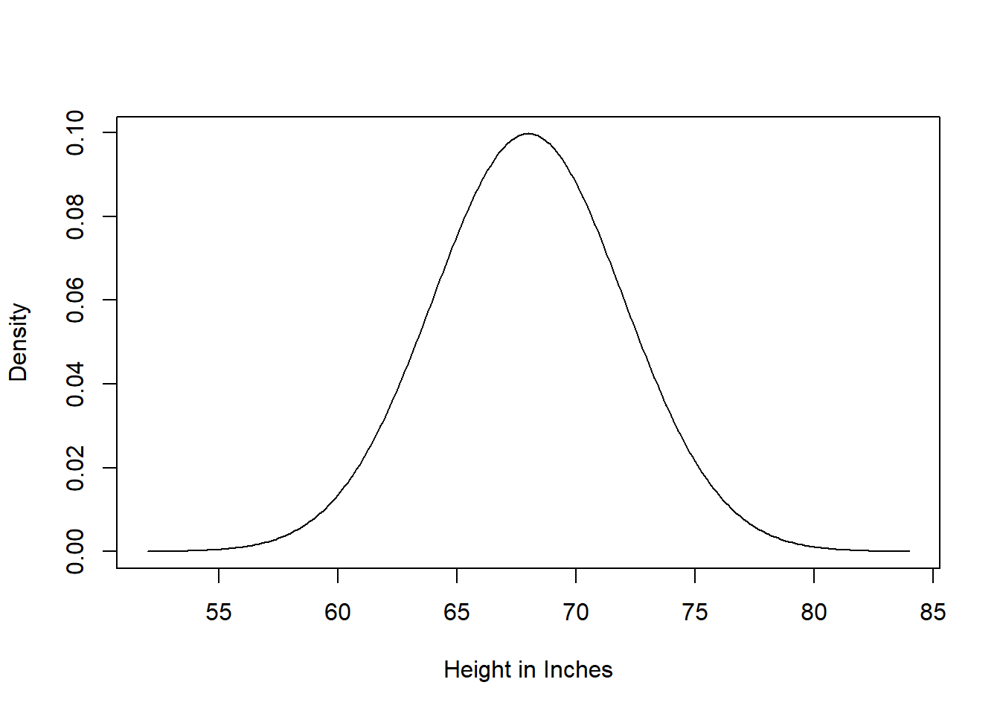
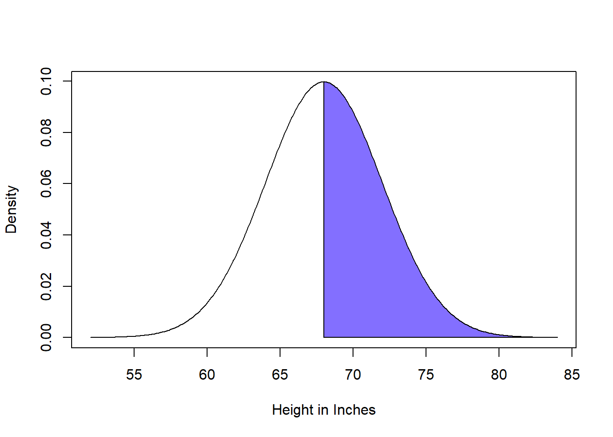
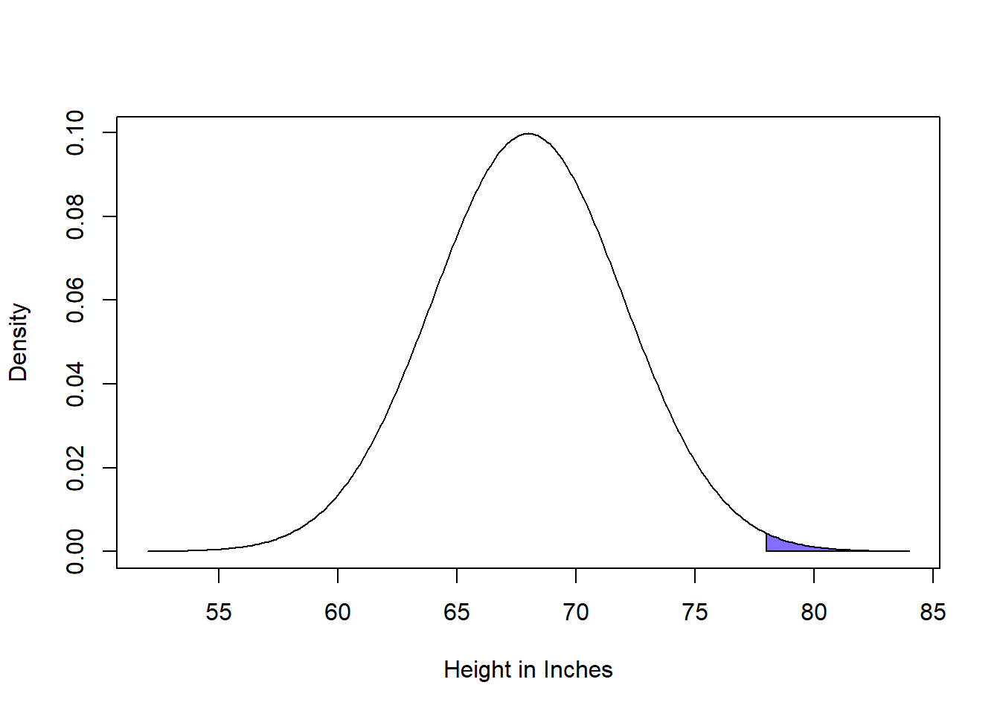
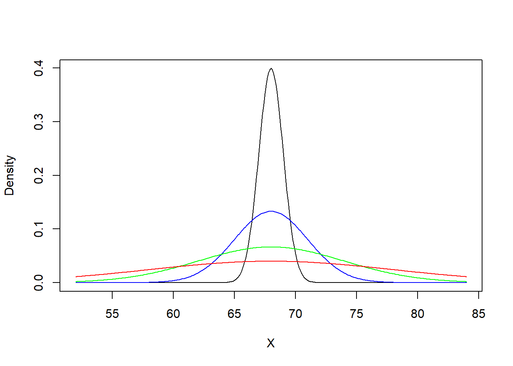
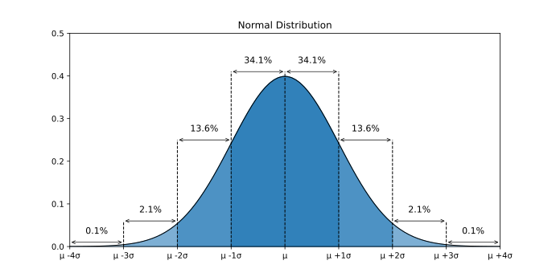
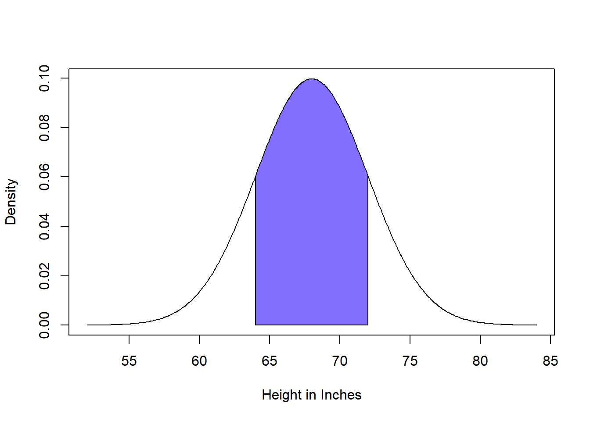
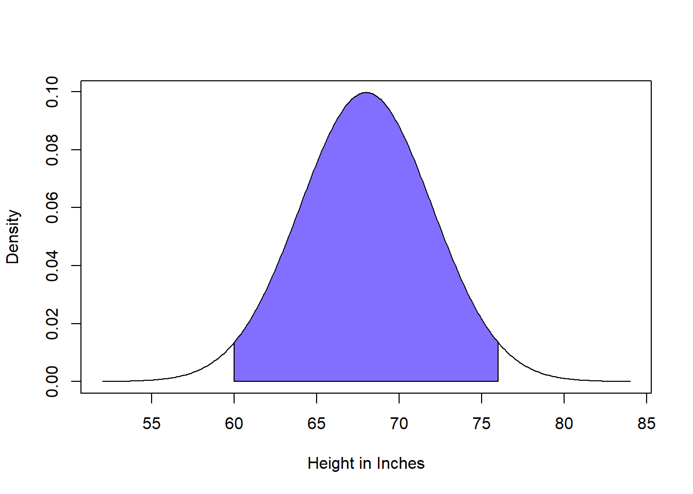
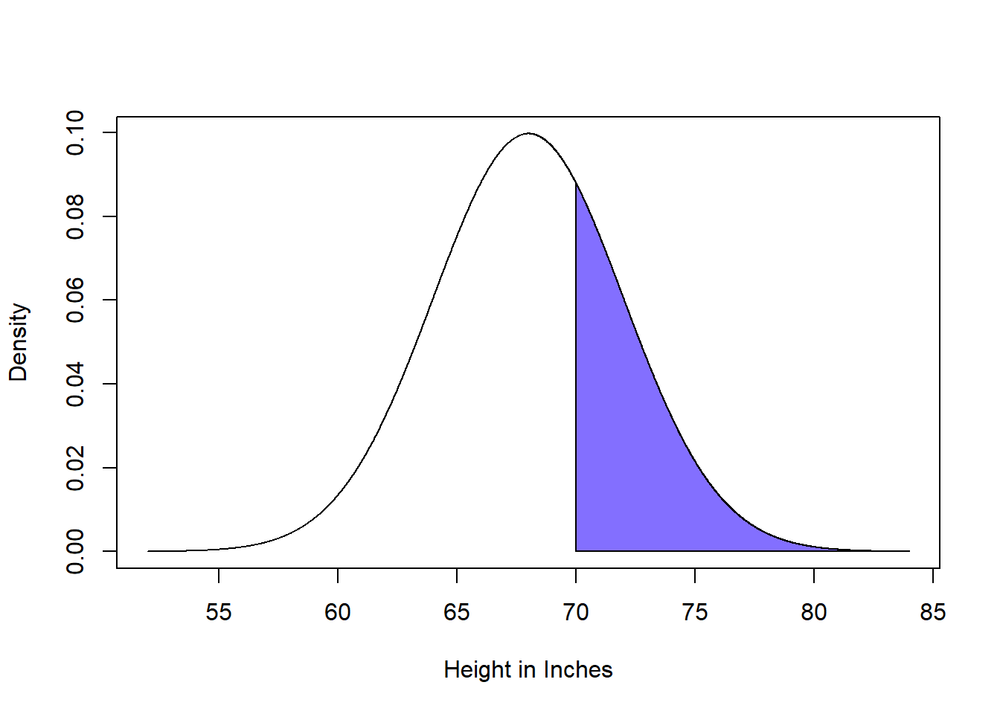
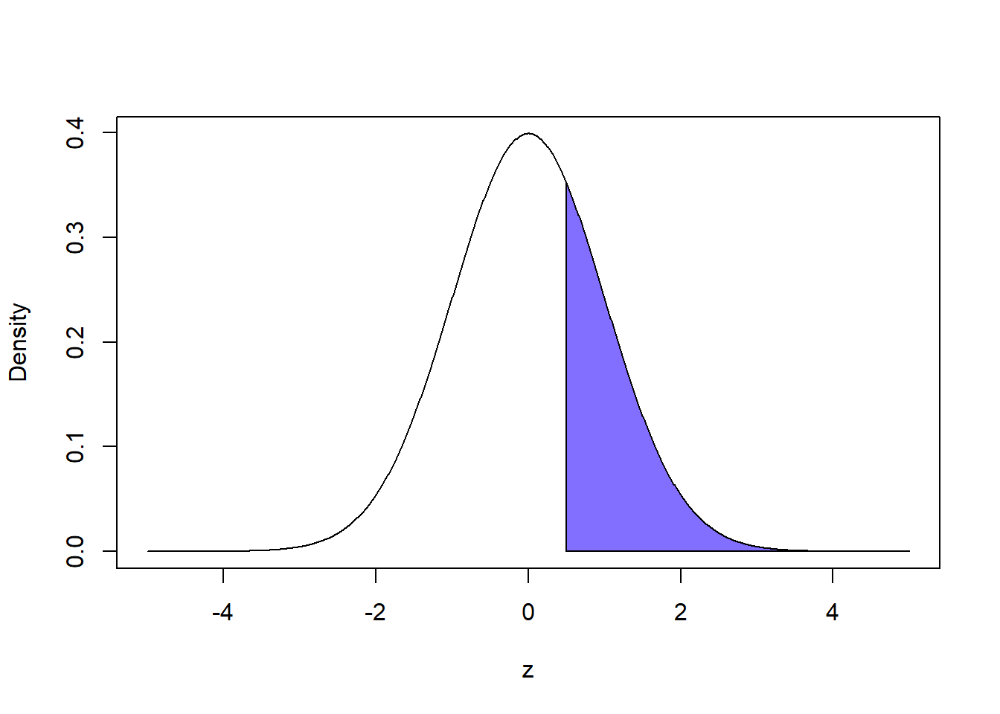

Chapter 5 Mathematical Notation, Probability, & Distributions
Before we dive into learning and applying statistical tools, we need to learn about some important concepts.
This week, we will discuss how statistics is all about assessing probability. Further, we will formally introduce some mathematical language we can use to discuss probability and we will introduce theoretical distributions and how we can use them to think about probability. In this text, we will specifically focus on introducing and understanding the normal distribution, one of the most important distributions in the field of statistics.
5.1 Statistics: Identifying the Signal From the Noise
One of the primary goals in this class is to help get you comfortable with inferential statistics techniques. Inferential statistics are methods where we take data from a sample of \(n\) people and then try to learn something about the broader population of people we think they represent. When we talk about an arbitrary number of people, we will often use the the letter \(n\) when we don’t know what that number actually is (or when the exact amount doesn’t matter). A population represents a broad category of people we want to learn about and a sample represents a subset of that population that we recruited for a study.
The reason inferential statistics are so important is because usually you cannot survey every person in a population of interest. Perhaps you want to do a study focusing on people who vape in the United States - well, that is quite literally millions of people. Surveying millions of people is impractical or impossible. However, it is more practical to recruit \(n = 1,000\) people who vape or \(n = 10,000\) people who vape. With inferential statistics methods, we can take information about our sample of \(n\) people who vape and try to make conclusions about the broader population of people who vape. This is our main mission when employing inferential statistics techniques - take information from a sample to learn about a corresponding population.
These inferential “conclusions” are essentially probabalistic guesses! These methods allow us to ask, “How probable do we think it is that the signal we have observed in our sample is representative of the broader population?” Here, signal just refers to any effect or difference that we may observe. For example, in our (hypothetical) study of people who vape, we might find that twice as many men in the sample report using their vape while at work compared to women in the sample. This difference between men and women in the sample represents a signal - the objective of inferential statistical methods is to help us determine how probable we think it is that the signal within the sample represents a meaningful, non-random pattern within the overall population. In the case of our example, how probable do we think it is that men who vape are actually more likley than women who vape to vape while they are at work?
One of the hardest parts about trying to identify these signals is wading through the noise in our data. We can think of noise as variability within our data that is simply the result of randomness. Even if there exists a signal in our overall population, when we run a study we intend to recruit a random sample - a sample is considered random when every person in the population has the same probability of being chosen. This randomness introduces variability into the data that may obscure signals we might observe.
For example, let’s say we want to know how likely it is that if we flip a coin we get heads. Intuitively, we imagine it is 50-50, that 50% of all coin flips should be heads and 50% should be tails. So, we flip a coin once and get heads. We flip it again and get…heads?!?! In fact we flip 5 heads in a row before we get a tails! We flip the coin 100 hundred times and we end up flipping heads 72 times. Now, I promise you, the reader, that there is a 50% chance of getting heads (assuming this isn’t some trick coin or some quantum thought experiment), however, because every coin flip is independent (i.e., not dependent on any other coin flip) and random, the reality is that we have flipped heads 72% of the time! This represents our signal. Because we have taken a random sample of coin flips, there is natural variation in the results we have observed - this variation is the noise. Noise, natural variation in our sample data as a result of randomness, obscures the signals that can tell us about our population.
So, our goal in inferential statistics is to take a sample and try to learn something about the population we believe they represent. In order to do so, we must wade through noisy data in search of meaningful, probable signals. While by no means a rigorous equation, our ability to make conclusions about the population is dependent on the ratio of signal to noise, or: \(\frac{signal}{noise}\). Often we assume that no signal exists at the population-level and then try to assess how probable our observed data is under this assumption.
With a fraction, a big numerator (i.e., the top) means the overall number is bigger (i.e., \(\frac{4}{3} > \frac{2}{3}\)). A bigger denominator (i.e., the bottom) means the overall number is smaller (i.e., \(\frac{2}{5} < \frac{2}{3}\)). So, we can understand that the bigger (or “stronger”) our signal in our sample, the less probable we think it is that no signal exists at the population-level (or, the more probable we think it is that a signal does exist). Noise can be understood to obscure signals we may observe in our data (i.e., weaken signals)
5.1.1 Statistics and Falsification
So, statistics represents a broad set of methods through which we can take data from a sample, search for signals amidst the random noise, and assess how probable we think it is that the signal we are observing is representative of the broader population! Importantly, statistics isn’t about figuring out what is true or false. Statistical methods were developed because we really cannot know what is true – instead we can reflect on what is probable. If something is not probable, we could assume some alternate reality is true, a sort of logic of contradiction. We refer to the act of determining something is improbable as falsification. For example, we could never prove that men vape at work more than women do, but we could observe data and feel confident that it is probable that men and women don’t vape the same amount at work - we can seek to falsify that possibility by examing our data.
In statistics we do this by assuming a signal does not exist and then asking how probable our observed data is under this assumption - a confirmation by contradiction, of sorts. For example, we could assume that men and women who vape, vape the same amount at work. Then we could collect data and ask, “if we assume that men and women vape the same amount at work, how likely is the data we have observed?” Let’s say we collect data about vaping at work and find that men vape at work 2% more than women - if we assume that men and women, generally, vape the same amount of work, does this signal in our sample seem probable? Sure! - 2% doesn’t seem like a very big difference. Maybe we just happened to interview a couple men who vape at work a lot (e.g., noise). Or, what if in our sample, men smoke at work 300% more than women? This observation seems way more unlikely if we assume no true signal and we feel more confident rejecting our assumption that men and women vape the same amount at work! This is the logic we will be employing when we use inferential statistics techniques - we will assume that a signal doesn’t exist and then observe data and assess how probable our observed data is under our assumption of no signal.
This represents a logic of contradiction. We make an assumption and then ask how likely our observation are under that assumption. If the observations are unlikely, this provides evidence that our assumption may be wrong and then we reject our assumption. Almost every inferential statistical test involves three primary steps: the first is to assume that a signal does not exist in the overall population (e.g., assume that men do not vape at work more than women do); the second is then to measure and quantify the signal and the noise within the sample; and the final step is to ask how probable it is that we could observe the patterns in our data assuming that no such signal exists. To apply this to our coin flipping scenario: first, we assume that there is a 50% chance of flipping heads any flip; then we flip a coin \(n\) times and calculate how often we got heads; and, finally, based on the data, we ask how probable it is that we could have observed the sample (i.e., the coin flips) assuming that the chances of flipping a heads was 50-50. So, if we flip a coin 100 times and get heads 72 times, do we still feel confident that there is a 50% chance of getting heads?
5.1.2 Statistics: The Art of Making Educated Guesses
Perhaps this was all a long-winded way of saying that statistics is the art of making educated guesses based on the data we have available to us. This is, in fact, a very human activity! We do it all the time! Every day we make probabalistic decisions based on information available to us. A classic example is which way should I drive home to avoid traffic? You usually can’t know the best way, but from experience (your sample), you decide the route (usually dependent on the time of day and which routes are available). You choose the route you think has the highest probablity of being fastest.
Now, statistics can feel scary because it is often presented as a bunch of mathematical equations and weird distributions and there are lots of Greek letters and tables. I definitely don’t whip out a calculator and do some mathematical calculations to decide which way to drive home (even Google Maps cannot predict a car crash before it happens). In this chapter, I want to go over some of this “scary” math stuff because its all just ways of presenting probability in formal and testable terms. So, as we dive in, I want to assure you that you are familiar with the logic behind probability - understanding how we represent probablity and probabilistic decision-making in statistics will actually make understanding the statistical methods way way way easier.
5.2 Intro to Probability and the Normal Distribution
Statistics is all about assessing the probability of our observed data given some assumption. As such, we need ways to formally think through the concepts of probablity.
5.2.1 Defining Probablity Mathematically
We need a way to express the following question mathematically: “What is the probability that [insert phenomenon] will occur?” For example, we might wish to ask, what is the probability that the result of our next coin flip will be heads? If we let \(A\) represent our next coin flip, we then want to ask, “What is the probability that \(A = heads\)?”
We can use \(P(x)\) notation to achieve this statement mathematically. \(P(x)\) can simply be translated as “The probablity of \(x\)….” So, if we were to write \(P(A = heads)\), we would read that as saying that “The probability that our next coin flip will be heads is….” Intuitively, we know that \(P(A = heads) = .5 = 50\%\). We would read this as saying “The probability that our next coin flip is heads equals 50%.”
We can also chain together multiple phenomena and ask how likely the combination of outcomes is. For example, we could ask \(P(A = heads\) \(OR\) \(A = tails)\). Here we are just asking what the probability is that the coin flip will be either heads or tails - we can see that since those are the only possibilities for a normal coin that \(P(A = heads\) \(OR\) \(A = tails) = 1 = 100\%\).
5.2.1.1 Conditional Probablity
At the heart of inferential statistics is the concept of conditional probablity. Conditional probability comes in handy when we want to ask, “Assuming that \(A\) is true, what is the probablity of \(B\) occurring?” Here \(A\) and \(B\) simply represent phenomenon or circumstances.
We can write this mathematically, like so: \(P(B|A)\). We would read this as “The probability of \(B\), given that \(A\) is true….” Now, \(A\) does not actually have to be true, it can be entirely hypothetical. For example, someone could ask you if the freeway is the fastest route to get to your house - let \(B\) represent the freeway route to your home. Now, (hypothetically) you know that the freeway is the fastest way except during rush hour. During rush hour, you have found that the freeway is fastest only 1/3 of the time. So, let \(A\) represent whether or not it is rush hour. We could ask \(P(B|A = not\) \(rush\) \(hour)\). Well, from experience we have found that the freeway is always fastest when it is not rush hour so, \(P(B|A = not\) \(rush\) \(hour) = 1 = 100\%\). Likewise we could ask \(P(B|A = rush\) \(hour)\). From experience, we have found that \(P(B|A = rush\) \(hour) = 1/3 = 33.\bar{3}\%\).
Why is conditional probability so important in inferential statistics? In a quantitative study, we will observe some data (i.e., our study sample). We will also assume that a signal does not exist (e.g., men and women who vape, vape the same amount at work). So, we will try to ask \(P(data|no\) \(signal)\) - or, what is the probablity that we observed our data assuming that no signal exists? That is the foundation of every single inferential statistical method that we will employ, for example:
If we want to know if smoking cigarettes leads to lung cancer, we would 1) assume that smoking cigarettes and lung cancer are not related, 2) observe data from a sample (perhaps ask people if they smoked and if they had lung cancer), and 3) then assess how probable our data is given our assumption that smoking cigarettes and lung cancer are not related.
The “probablity of data” seems like a funny concept. Let us say we assume that men and women who vape do so the same amount at work. We recurit a sample and ask how often they vape at work and then we compare responses of men and women. If we assume that men and women vape the same amount at work, then we imagine it is quite probable that men and women report vaping at work at similar rates. However, it’s almost certain that men and women in our sample won’t have identical vaping patterns at work - thus, it is important that we be able to capture probabilties of discrepancies between our observed data and our assumption. For example, if we think that men and women vape the same amount at work, it seems that it would be quite probable that in our sample we find that men, on average, vape at work 0.2 times more per workday than women - perhaps we randomly sampled a couple of men who vape more than others. Whereas, it might be quite improbable, assuming men and women vape the same amount, if we found that men vape 10 times more per workday than women - such an improbable finding might force us to question if our initial assumption was correct. So, we need a way to assess the probability of our data given some underlying assumption.
5.2.1.2 Introducing Theoretical Probability Distributions
We do so by employing theoretical probability distributions. A probability distribution is a mathematical function that identifies the probability of a given outcome occurring. While distributions are sometimes a primary point of confusion in statistics, the reality is that distributions are just a way of capturing the way we think about probabilities - they first come from our intuition about the world, the math is just a way of making it rigorous. Essentially, a probability distribution is a tool by which we can make assumptions about the behavior of a given variable.
For example, let’s imagine we are playing a game where we are guessing the height of the next person to walk in the room - we don’t have any information prior to making our guess. Well, our best guess is probably the average height of all people…let’s say we are pretty sure the average person is 5 foot 8 inches tall. We are also pretty sure that there are just as many people shorter than 5’8" as there are taller than 5’8" (i.e., the distribution of height is symmetrical around the mean). Further, we are quite positive that most people’s heights are around 5’8" - we feel confident that most people are between 5’2" and 6’2". It is quite rare for someone to be shorter than or taller than that range.
So, we have constructed a theory of the distribution of height in order to play this game. We think that if someone walks into the room (i.e., a random observation), that they are most likely to be of average height (5’8“) or close to that height (whether taller or shorter). Further, we think that heights far away (way shorter or way taller) than 5’8” are the least likely to be observed. We can actually capture this probability by plotting it as a mathematical function like so. We will have the x-axis be height (in inches) and the y-axis will represent the hypothetical probability of observing that height if someone walked in the door:
## Let's create our x-axis, ranging from 4'4" (52 inches) to 7'0" (84 inches)
x <- seq(52, 84, by = .1)
## We will define probabilities using the dnorm function
## The dnorm function generates the points that correspond to a normal distribution
## We will set the average height to 5'8" (68 inches) with a standard deviation of 4 inches
y <- dnorm(x, mean = 68, sd = 4)
## We will now plot the normally distributed data as a line (type = "l")
plot(x,y, type="l", xlab = "Height in Inches", ylab = "Density")
As we can see, this mathematical function represents our idea of the distribution of height among a random sample (i.e., the people walking in the door). The height of the curve represents how likely we believe it is that that value will be observed. We can see that 68 inches is the most probable height to observe (it is the tallest point of the curve), that heights nearer to 5’8" are relatively likely, and that heights further away from 5’8" are rarer. Further, we don’t have any reason to think there are more short people than tall, or vice versa, so the distribution is symmetrical around the mean.
This curve is referred to as the normal distribution and it is the first and most important distribution we will encounter in our statistics work. We will often assume that an outcome follows the normal distribution. So, as we can see, this normal distribution sort of captures our intuition around how we believe height is distributed amongst the population.
5.2.1.3 Assessing Probabilities Using Theoretical Distributions
One of the really cool parts of theoretical probability distributions is that we can ask how probable a range of outcomes are, assuming that the distribution is correct. We may wish to know how likely it is that someone 6’6" inches or taller walks in the door! Importantly, we can agree that if someone walks through the door, there is a 100% that they will have a height! That might be silly to say, but since the height of the distribution curve represents the probability of observing that given value, that means that if you sum together the height of the curve at every point, that the sum will add up to exactly 1 (which corresponds to 100%). We can depict this using the concept of area under the curve. We can depict the area under the curve like so:
## We will now plot the normally distributed data as a line (type = "l")
plot(x,y, type="l", xlab = "Height in Inches", ylab = "Density")
polygon(x,y,col = "slateblue1")
The sum of the shaded region of the plot in this case is exactly 1. We can actually calculate this using the auc function in the MESS library.
## First we take the integral of our curve using the AUC function in the MESS library
## AUC stands for "Area Under the Curve"
AUC <- MESS::auc(x,y)
## We will round the result to two decimal for ease of reading
## Taking integrals of lines is an imperfect art so R doesn't get exactly 1
round(AUC,2)## [1] 1Now, this isn’t super interesting. Of course there is a 100% chance that a person has a height. But, now we can start asking more interesting questions. If \(X\) is the height of the next person to walk in to the room, we could ask \(P(X >= 5'8" | height\) \(is\) \(normally\) \(distributed)\) (or what is the probability someone is 5’8" or taller, assuming that height is normally distributed around 5’8“). We can use the same principle as above to make this calculation. We start by shading in the area under the curve corresponding to 5’8” and taller, like so:
## We will now plot the normally distributed data as a line (type = "l")
plot(x,y, type="l", xlab = "Height in Inches", ylab = "Density")
## we want all values of x and y where x is greater than 68
## The following three lines of code do this
poly_x <- c(68,x[x>=68])
index_val <- which(x == 68)
poly_y <- c(0,y[index_val:length(y)])
## Then we plot it
polygon(poly_x,poly_y,col = "slateblue1")
Intuitively, since the normal distribution is symmetrical, it appears that there is a 50% chance that the height of the next person to walk in will be average (5’8") or greater. We can check with the auc function:
## First we take the integral of our curve using the AUC function in the MESS library
## AUC stands for "Area Under the Curve"
AUC <- MESS::auc(poly_x,poly_y)## Warning in regularize.values(x, y, ties, missing(ties)): collapsing to unique
## 'x' values## We will round the result to two decimal for ease of reading
## Taking integrals of lines is an imperfect art so R doesn't get exactly 1
round(AUC,2)## [1] 0.5Perfect! Now let’s do one more…at the beginning of the example, I asked how likely it is that someone 6’6" or taller walks through the door next (or \(P(X >= 6'6"\))). We can do that like so:
## We will now plot the normally distributed data as a line (type = "l")
plot(x,y, type="l", xlab = "Height in Inches", ylab = "Density")
## we want all values of x and y where x is greater than 68
## The following three lines of code do this
poly_x <- c(78,x[x>=78])
index_val <- which(x == 78)
poly_y <- c(0,y[index_val:length(y)])
## Then we plot it
polygon(poly_x,poly_y,col = "slateblue1")
## First we take the integral of our curve using the AUC function in the MESS library
## AUC stands for "Area Under the Curve"
AUC <- MESS::auc(poly_x,poly_y)## Warning in regularize.values(x, y, ties, missing(ties)): collapsing to unique
## 'x' values## We will round the result to two decimal for ease of reading
## Taking integrals of lines is an imperfect art so R doesn't get exactly 1
round(AUC,4)## [1] 0.0061As we can see, we think it is quite unlikely that the next person to walk through the door will be 6’6" or taller! In fact, rounding to 4 decimals, our distribution is suggesting to us that there is only a 0.61% chance that the next person to walk in will be 6’6" or taller. I would say that matches up pretty well with how often I bump into folks that are that tall!
5.2.1.4 Cannot Prove That A Variable Follows a Distribution
So, this is one of the tricky parts of statistics. We cannot prove that a variable \(X\) truly follows a given distribution. Generally, we assume that it does until evidence is presented to us that we should not. For example, we have displayed above why it makes sense to assume that height is normally distributed. The way we understand how height is distributed throughout the human population matches up with the structure of the normal distribution quite well. However, we cannot truly prove that height is normally distributed - we can only assume that it is. Now, if 100 people walked in the door and half were less than 5’0" tall and half were over 7’0", I might be a lot less confident that height follows a normal distribution. In other words, we can assume that a variable follows a given distribution and then we can look at data to reflect on this assumption. This is a central activity in undertaking inferential statistics.
5.2.1.5 Formally Defining the Normal Distribution
This has been a rather descriptive introduction to the normal distribution. Given how important it is, lets go over how we define it and what its properties are. Remember, our job as statisticians is to identify the signal over the noise. Distributions provide us an ability to rigorously navigate the ratio between the two. There are two parameters which define a normal curve: the mean value (denoted \(\mu\), the Greek letter “mew”) and the standard deviation (denoted \(\sigma\), the Greek letter sigma). We can think of the mean as our signal and the standard deviation as a measure of how noisy the data is. The larger the standard deviation, the wider our normal curve is (i.e., the more spread out from the mean value we will expect values to be observed). We can visualize this by plotting multiple normal curves with different standard deviations:
y1 <- dnorm(x, mean = 68, sd = 1)
y3 <- dnorm(x, mean = 68, sd = 3)
y6 <- dnorm(x, mean = 68, sd = 6)
y10 <- dnorm(x, mean = 68, sd = 10)
plot(x,y1,type="l",xlab = "X", ylab = "Density")
lines(x,y3, col = "blue")
lines(x,y6, col = "green")
lines(x,y10, col = "red")
All of these curves are normal distributions with the same mean. They just have different standard deviations. We can understand that a distribution with a larger standard deviation is anticipated to represent “noisier” data than that with a smaller standard deviation. This is because, the larger the standard deviation, the more likley it is that we will observe values farther and farther away from the mean value.
As we discussed in our sample, when we assume a variable is normally distributed, we understand that most of the values we will observe will fall close to the mean value. More extreme observations are understood the be rarer. We can quantify this more specifically - if we assume a variable is normally distributed, then we may understand that just over 2/3 (or around 68.2%) of all observations are expected to fall within 1 standard deviation of the mean. Further, that 95% of all observations will fall within 2 standard deviations of the mean. This can be depicted like so:

In our example from before with height, we had defined a normal distribution with a mean height of 5’8" and a standard deviation of 4“. By definition, we would anticipate then that there is a 68.2% probability that the next person to walk through the door will be within 4 inches (1 standard deviation) of 5’8” (or, 5’4" through 6’0“) and that there is a 95% probability that the next person will be within 8 inches (2 standard deviations) of 5’8” (or 5’0" through 6’4"). We can confirm this by looking at the area under the curve again:
## We will now plot the normally distributed data as a line (type = "l")
plot(x,y, type="l", xlab = "Height in Inches", ylab = "Density")
## we want all values of x and y where x is greater than 68
## The following three lines of code do this
poly_x <- c(64,x[x>=64 & x<=72],72)
index_low <- which(x == 64)
index_high <- which(x == 72)
poly_y <- c(0,y[index_low:index_high],0)
## Then we plot it
polygon(poly_x,poly_y,col = "slateblue1")
## First we take the integral of our curve using the AUC function in the MESS library
## AUC stands for "Area Under the Curve"
AUC <- MESS::auc(poly_x,poly_y)## Warning in regularize.values(x, y, ties, missing(ties)): collapsing to unique
## 'x' values## We will round the result to two decimal for ease of reading
## Taking integrals of lines is an imperfect art so R doesn't get exactly 1
round(AUC,2)## [1] 0.68Here, we have filled in the area within 1 standard deviation of the mean and we calculated that this area under the curve sums to 0.68, corresponding to a 68% probability of observing a value within this range! We can do the same for within 2 standard deviations:
## We will now plot the normally distributed data as a line (type = "l")
plot(x,y, type="l", xlab = "Height in Inches", ylab = "Density")
## we want all values of x and y where x is greater than 68
## The following three lines of code do this
poly_x <- c(60,x[x>=60 & x<=76],76)
index_low <- which(x == 60)
index_high <- which(x == 76)
poly_y <- c(0,y[index_low:index_high],0)
## Then we plot it
polygon(poly_x,poly_y,col = "slateblue1")
## First we take the integral of our curve using the AUC function in the MESS library
## AUC stands for "Area Under the Curve"
AUC <- MESS::auc(poly_x,poly_y)## Warning in regularize.values(x, y, ties, missing(ties)): collapsing to unique
## 'x' values## We will round the result to two decimal for ease of reading
## Taking integrals of lines is an imperfect art so R doesn't get exactly 1
round(AUC,2)## [1] 0.95Voila! We can see that 95% of observations fall between 2 standard deviations of the mean! You might be thinking that 95% (or 5%) is an important threshold in the statistics you’ve read or done before - we will get into that more in the next chapter!
5.2.1.6 The Standard Normal Distribution
One of the most important distributions is the standard normal distribution, sometimes also called the \(z\)-distribution. It is a normal distribution whose mean value is 0 and whose standard deviation is 1. We can plot it like so:
x<- seq(-5,5,by=.1)
y<- dnorm(x,mean = 0, sd = 1)
plot(x,y,type="l",ylab="Density")
You can actually take any value from any normal distribution and standardize it so that it maps onto the z-distribution! This is really useful because it allows us to standardize many of our statistical tests. Standardization is simply the process of dividing the observed signal by the observed noise. Standardization was REALLY important before computers came along. I have been running the auc() function to calculate the area under the curve, but before computers this was actually an incredibly complicated task! Standardzing a curve means that instead of dealing with an infinite possible number of curves, we can just think about one. Old statistics books had tables you could use to check the area under the curve given a specific value on the \(z\)-distribution, because calculating the area under the curve is too challenging by hand.
A value that is standardized to the \(z\)-distribution is called a \(z\)-score. A \(z\)-score is calculated by the following formula: \(z = \frac{x - \mu}{\sigma}\), where \(x\) is a value observed from a normally distributed variable. In this case, the signal is the difference between the observed value \(x\) and the mean value \(\mu\) and the noise is the standard deviation \(\sigma\). For example, let us say that someone walked into the room and their height was 70 inches. Well, we know that the mean height \(\mu = 68\) and that the standard deviation \(\sigma = 4\). Therefore, the \(z\)-score is \(\frac{70 - 68}{4} = \frac{2}{4} = 0.5\).
While, most of the time standardization is going to happen behind the scenes, it is important to reflect on how standardization doesn’t change the expected results - it is just a way of making the data easier to work with. Our process indicates to us that the value of 70 in a normal distribution with mean \(\mu = 68\) and standard deviation \(\sigma = 4\) is equivalent to \(z = 0.5\). This would mean that the probability of someone being 70 inches or taller \(P(X >= 70|\mu = 68, \sigma = 4)\) should have equivalent value to \(P(z >= 0.5| \mu = 0, \sigma = 1)\). Let’s check real quick.
First, we can look at \(P(X >= 70|\mu = 68, \sigma = 4)\) by shading in the region of the normal curve corresponding to heights greater than or equal to 70 inches and then we can calculate the area under the curve:
x <- seq(52, 84, by = .01)
y <- dnorm(x, mean = 68, sd = 4)
## We will now plot the normally distributed data as a line (type = "l")
plot(x,y, type="l", xlab = "Height in Inches", ylab = "Density")
## we want all values of x and y where x is greater than 68
## The following three lines of code do this
poly_x <- c(70,x[x>=70])
index_val <- which(x == 70)
poly_y <- c(0,y[index_val:length(y)])
## Then we plot it
polygon(poly_x,poly_y,col = "slateblue1")
AUC <- MESS::auc(poly_x,poly_y)## Warning in regularize.values(x, y, ties, missing(ties)): collapsing to unique
## 'x' valuesround(AUC,3)## [1] 0.308We get a value of 0.308. We can do the same process to check the value of \(P(z >= 0.5| \mu = 0, \sigma = 1)\). We will plot the \(z\)-distribution and shade in all values greater than or equal to 0.5 and then take the area under the curve:
x <- seq(-5, 5, by = .01)
y <- dnorm(x, mean = 0, sd = 1)
## We will now plot the normally distributed data as a line (type = "l")
plot(x,y, type="l", xlab = "z", ylab = "Density")
## we want all values of x and y where x is greater than 68
## The following three lines of code do this
poly_x <- c(.5,x[x>=.5])
index_val <- which(x == .5)
poly_y <- c(0,y[index_val:length(y)])
## Then we plot it
polygon(poly_x,poly_y,col = "slateblue1")
AUC <- MESS::auc(poly_x,poly_y)## Warning in regularize.values(x, y, ties, missing(ties)): collapsing to unique
## 'x' valuesround(AUC,3)## [1] 0.308As we can see, we get the same exact value! I know that this process of standardizing values may seem a bit odd to do, but it is the foundation of the first inferential technique we will learn about in a few chapters - the \(t\)-test. In fact, when we get there, we will actually see that a \(t\)-test is actually just a slightly variation of standardizing a normally distributed variable!
5.2.1.7 Approximating a Normal Distribution From Sample Data
We have covered a whole lot of information in this chapter! The last thing I want to discuss is how we approximate a normal distribution from available data. This is important because usually we do not know what the actual mean and standard deviation of a variable are.
So, let’s say I sat at my desk all day and I counted that \(n\) people walked through the door. I wrote down the height of every single person who came in, like so \(\{x_1,x_2,x_3,\cdots,x_n\}\), where \(x_i\) represents the height of the \(i\)th person to walk through the door.
In order to approximate the theoretical normal distribution we assume to describe height, we must attempt to estimate the mean \(\mu\) and standard deviation \(\sigma\) of the height of each person.
It can be helpful to use \(\Sigma\) (sigma) notation to make these calculations. \(\Sigma\) is used in mathematics to say, “take the sum of” or “add together.” So, if I were to write:
\[\sum_{i = 1}^{n}{x_i}\]
, what I am saying is, take the sum of every observation \(x_i\). The \(i = 1\) is saying that you should start with \(x_1\) and then keep adding the values together until you get to the value at the top, which is \(n\) and corresponds to \(x_n\).
The mean value of a sampled variable with \(n\) observations is the sum of all the observations divided by the number of observations, \(n\). Or, this can be written as:
\[\bar{x} = \frac{\sum_{i = 1}^{n}{x_i}}{n}\] We denote this mean with \(\bar{x}\) instead of \(\mu\) because we have calculated this mean from the sample, not the entire population. We want to make this distinction because there are many applications where we will compare the sample mean \(\bar{x}\) to an assumed population mean \(\mu\).
Next, we need to generate an estimation for the standard deviation \(\sigma\). We will use the symbol \(s\) to denote the standard deviation when it is calculated from a sample. Our goal in measuring the standard deviation is to attempt to capture how far, on average, each observation \(x_i\) is from the mean value \(\bar{x}\). The further observations are from the mean value, the larger the standard deviation is.
Ideally, then we would just take the average of the distance from all the observed values from the mean, but, unfortunately, this actually always equals 0. For example, let’s say our values of \(x_i\) were \(\{3,10,19,2,1\}\). Here the mean value is 7 (i.e., \(\frac{3 + 10 + 19 + 2 + 1}{5} = \frac{35}{5} = 7\)). We can take the distance of each observation from the mean \(\{3 -7,10-7,19-7,2-7,1-7\} = \{-4,3,12,-5,-6\}\) but the sum of all these distances actually equals 0: \((-4) + 3 + 12 + (-5) + (-6) = 0\).
So, we are forced to do an intermediary step and calculate the variance, which we denote as \(s^2\). For the variance, we square the difference between each value and the mean before we sum them. By squaring the value first, we always end up with a positive number. But, we have also squared the values we actually wanted, hence why we consider standard deviation \(s\) the square root of variance \(s^2\).
So, to calculate variance we use the following equation:
\[s^2 = \frac{1}{n-1}\sum_{i=1}^{n}{(x_i - \bar{x})^2}\]
We can then get the standard deviation because \(s = \sqrt{s^2}\). All we need to do is take the square root of the variance and we have the standard deviation. At this point we have calculated a sample mean \(\bar{x}\) and a standard deviation \(s\), which we can consider estimations of both the population-level values \(\mu\) and \(\sigma\). We can use our values of \(\bar{x}\) and \(s\) to either generate the normal distribution or to standardize the values of our variable onto the \(z\)-distribution!
5.3 Conclusion
In this text, we have introduced a new language of probability. We have briefly discussed how statistics is an art of falsification - we assume that something is true, typically by assuming that an outcome follows a specific theoretical distribution and then we try to assess how probable our sample data is given our assumption. If the data we observe seems improbable under our assumption, then we might need to question the validity of our assumption.